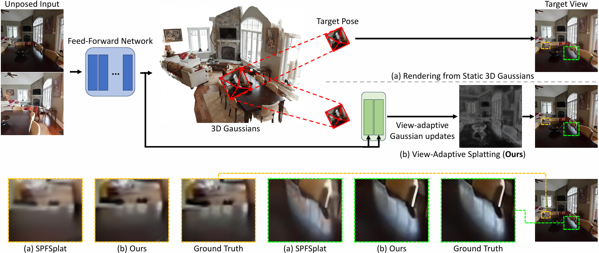
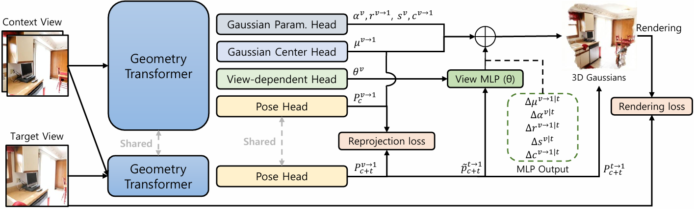

We present ViewSplat, a view-adaptive 3D Gaussian splatting network for novel view synthesis from unposed images. While recent feed-forward 3D Gaussian splatting has significantly accelerated 3D scene reconstruction by bypassing per-scene optimization, a fundamental fidelity gap remains. We attribute this bottleneck to the limited capacity of single-step feed-forward networks to regress static Gaussian primitives that satisfy all viewpoints.
To address this limitation, we shift the paradigm from static primitive regression to view-adaptive dynamic splatting. Instead of a rigid Gaussian representation, our pipeline learns a view-adaptable latent representation. Specifically, ViewSplat initially predicts base Gaussian primitives alongside the weights of dynamic MLPs. During rendering, these MLPs take target view coordinates as input and predict view-dependent residual updates for each Gaussian attribute (i.e., 3D position, scale, rotation, opacity, and color). This mechanism, which we term view-adaptive dynamic splatting, allows each primitive to rectify initial estimation errors, effectively capturing high-fidelity appearances.
Extensive experiments demonstrate that ViewSplat achieves state-of-the-art fidelity while maintaining fast inference (17 FPS) and real-time rendering (154 FPS).

Overview of ViewSplat. While static 3D Gaussians (a) often result in blurred renderings, our ViewSplat (b) dynamically refines Gaussian attributes based on the target pose. This allows for superior reconstruction of fine-grained details like sharp edges and specularities compared to existing methods.

Architecture of ViewSplat. Our framework uses a shared Geometry Transformer backbone to jointly estimate camera poses and canonical 3D Gaussians from unposed images. A specialized view-dependent head generates dynamic MLPs that predict pose-specific residual offsets, refining Gaussian attributes during rendering to capture complex view-dependent effects.
@article{Jeong2026viewsplat,
title={ViewSplat: View-Adaptive Dynamic Gaussian Splatting for Feed-Forward Synthesis},
author={Jeong, Moonyeon and Min, Seunggi and Lee, Suhyeon and Seong, Hongje},
journal={arXiv preprint arXiv: 2603.25265},
year={2026}
}